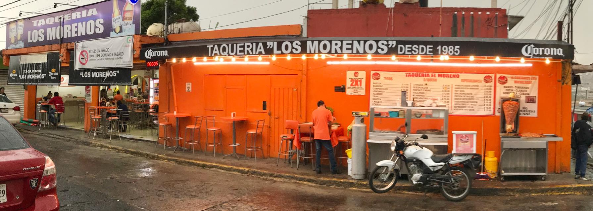

Taqueria El Moreno
Inicio
Sitio Oficial
Detrás de los tacos, quesadillas y vampiros hay toda una historia que asegura que querer es poder, que no existen límites, incluso para aquellas personas que podrían no ser considerados como aptos para iniciar un negocio.